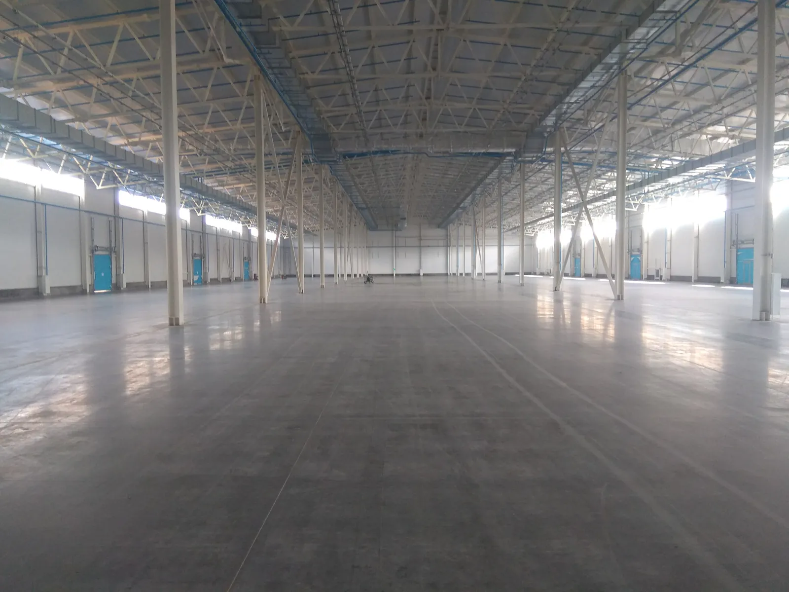

- Главная
- Полы для крытых стоянок
Полы для крытых стоянок
Наносим полимерные системы POLYTEC на бетонное основание. Крытая стоянка названа среди зон, для которых подходит такое покрытие.

На крытой стоянке пол встречает колёса, воду и перепады температуры. Полимер на готовом бетонном основании защищает поверхность от влаги, химии и температурных перепадов. Если бетонного основания ещё нет, сначала заливаем его.
Смету считаем по объекту: площадь, состояние основания, нагрузки и тип покрытия. Цены на странице нет.